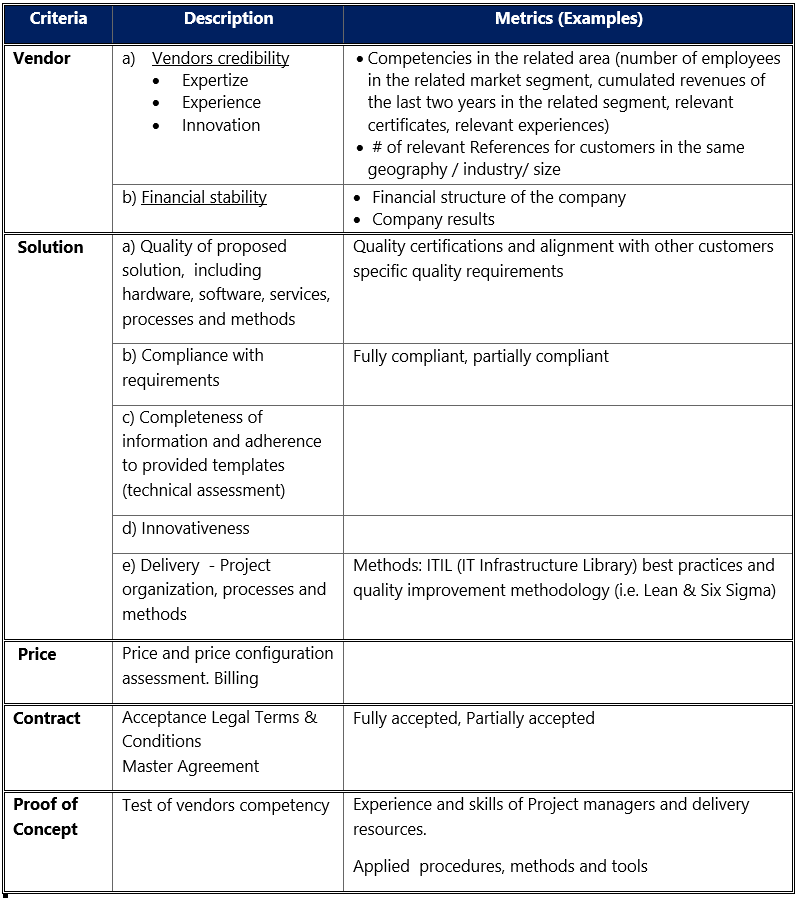

- RFPs are a great source of information about customers` objectives, providing insight on the decision process and clearly outlining customers' needs and requirement
- Applying resources to capture and analyze RFP data can reap big benefits, providing valuable insights for marketing and product management and improving future RFP win rates for your sales teams.
Unlike consumers who typically have a less structured approach to purchases, enterprises, and public sector organizations explicitly and publicly document their "wants" and requirements through Requests for Proposals (RFPs) and other forms of requests to tender.[1] RFPs are structured methods for public and non-public organizations to receive competitive bids for needed products and services and thus every month, thousands of RFPs are posted on the internet and /or send directly to selected vendors. The RFP process is meant to bring structure and transparency to the procurement decision while reducing risk through open requirements and discussion.
Sales personnel and bid management teams spend a considerable amount of effort in answering customer questions and preparing an offer. However, what happens after the sales team completes the RFP? Too often, not much, as sales and bid teams turn their focus to the next RFP. RFPs are a great source of information about customer’s objectives, their evaluation and decision process, and the customer’s needs and requirements – providing you with Voice of the Customer (VoC ) insight [2].
By mining, analyzing and sharing this information, you can transform a “static” RFP document into a very valuable resource for sales, market research, and product marketing teams. Below is a quick checklist to identify if you are leveraging RFP insight as a VoC source:
- Do you have a central repository for RFPs documents?
- Do you use a common framework to track and evaluate content from multiple RFPs?
- Do you use predictive analysis tools to search for insights and trends (e.g. to find similarities across multiple RFPs)?
- Do you have a process to validate RFP responses with the market and competitive insights?
- Do you regularly have cross-functional team reviews, where you share RFP information with marketing, product and services teams?
If you have answered “no” to one or more of the questions above, you may be missing valuable opportunities to gain VoC insights which can be incorporated into your product and marketing strategies. So, how can you systematically extract insight from RFPs, help your company define your future product roadmap and win more deals? The first step to leverage RFP data to extract customer needs and requirements is to collect all RFP documents in a single repository. On the surface, this seems to be an easy task; however, for enterprise and public sector organizations who receive a large number of RFPs, this can be a challenge. Usually, there are distributed repositories that capture some but not all RFPs (often only these related to large, multinational projects). Further, RFPs may be released in the local language (not English) and therefore requiring translation for non-native speakers. Although a central repository should be inclusive of all RFPs, there is also an advantage in developing local repositories at the country level to capture regional differences (e.g. variances). This supports personalization and customization in the development of more country/region-specific product requirements and marketing campaigns.
Once the decision has been taken to enable both central and local repositories, the next challenge to overcome is HOW to extract valuable insights (VoC) from the RFP documents?
Typically each RFP provides a large amount of information, has its own structure and may even have its own terminology. Almost no RFP is like another. Some RFPs are very detailed and structured, with clearly outlined requirements and measurements, while others are more descriptive with less defined requirements and measurements. As there is no central authority to define commonly-accepted definitions of software tools and services, it requires some domain expertise to group customers’ requirements into more generic categories. Also, there is a mix of different file formats e.g. Excel, PDF, MS Word, etc.
There are many methods to organize and extract insights from large volumes of data. In the Six Sigma toolbox, the Affinity Diagram is used to consolidate a large amount of information into groupings or clusters of ideas that have a natural 'affinity', i.e., that have a common thread running through them. This is a great tool to use when sorting Voice of the customer data under broad 'Issues' categories and an ideal tool to find patterns in the diverse and vast information volume provided in RFPs. A high-level framework to manage data and extract insights should align with a typical structure for an RFP, which usually includes (at minimum) following information:
- Who has released the RFP and who is responsible for the selection decision
- What is the objective of the RFP and how does it support the overall strategy of the client. RFPs also often provide the name of the program supported by the RFP and how the responsible organizational structure of the client looks like.
Example of customers goals:
- Cost - reduction and cost transparency
- Flexibility and scalability
- Standardization
- Innovation
- Supplier (Vendor ) consolidation
3. Customer requirements
- Technical Functional- and Non Functional requirements
- Security and Compliance
- Environment and Sustainability
4. Selection criteria
Selection criteria and weighting as defined by the customerThe following chart is a framework that helps to categorize the information to capture from RFPs. The criteria listed are examples and not necessarily inclusive of all criteria required to evaluate: this should be industry-specific and relevant to the context of each vendor's requirements.
Figure 1: Example Framework for capturing and evaluating RFP criteria. Selection criteria and weighting as defined by the customer. 
The tools and methods outlined above need to be adapted to the specifics of your industry and your individual objectives. Finally, how can you engage cross-functional teams to ensure valuable insights from RFPs transform into concrete actions and high-value outcomes?
- Convene representatives from at least three cross-functional teams, including sales, product management and marketing (and you can also include technical consultants, customer service and other client-facing colleagues)
- Agree on a common framework, process, and tools to capture and manage information from individual RFPs so you can more easily consolidate individual information into collective insights
- Update your buyer (customer) personas and customer decision journeys if you detect variances, gaps, and new information
- Align product management and marketing teams to evaluate insights so they can incorporate common requirements, adapt messaging and embed your VoC into marketing campaigns
- Track, analyze, report and fine-tune your approach as you generate new insights from future RFPs
And equally important, start incorporating these insights into future RFP responses to influence, share and shape your client’s future IT strategy based on consolidated market insights and a customer-centric product roadmap. Be a lighthouse for your customers to help them with their direction. By showing that you listen to and proactively incorporate Voice of Customer insights, you enable your customers to enhance their strategy today and become a valued partner for them tomorrow.
References
[1] There are a number of variations on the term used for Requests for Proposals (RFPs), namely:- Request for Quotations (RFQ)
- Request for Qualifications (RFQ)
- Request for Information (RFI)
- Request for Tender (RFT)
[2] Voice of the Customer (VoC) and Critical to Quality Characteristic (CTQC) in the Six Sigma language. See as a starting point: sixleansigma.com
Disclaimer
Opinions or points of view expressed in this article represent the personal position of the author. This document does not constitute professional advice. The information in this document has been obtained or derived from sources believed by the author to be reliable but I don’t represent that this information is accurate or complete. Any opinions or estimates contained in this document represent a judgment at this time and are subject to change without notice.